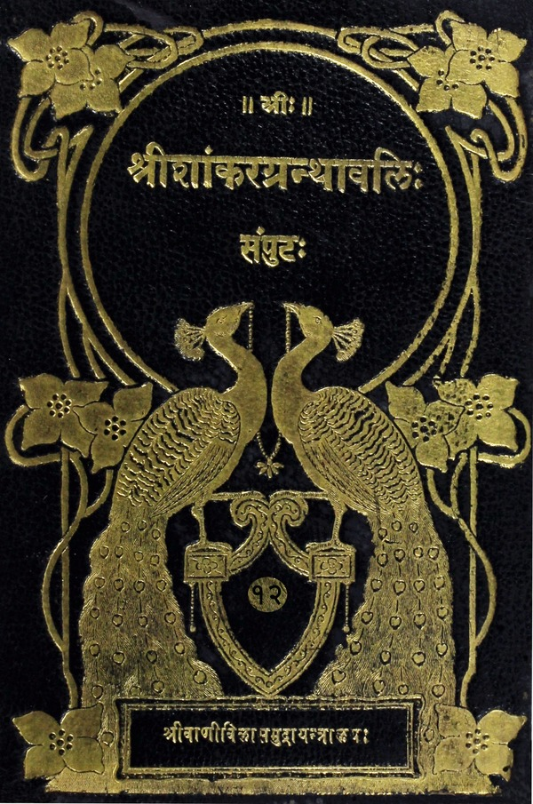

श्रीशांकरग्रन्थावलिः
संपुटः १ - २०
Home
About
Concluding Note
T. K. Balasubramaniam
Superhuman efforts of a savant
Prema Nandakumar
Views on the Sri Vani Vilas Press
His (Sri TKB’s) aim
Volumes
२. उपास्यनिष्ठा तत्पदार्थनिष्ठा वा मध्यमा षडध्यायी |
धशमोऽध्यायः |
भगवत्कृतः संक्षेपतो विभूतियोगज्ञानोपदेशः
विस्तरेण तत्कथनार्थोऽर्जुनस्य प्रश्नः
भगवता विस्तरतः कृतो विभूतियोगोपदेशः
एकादशोऽध्यायः |
विश्वरूपदिदृक्षोरर्जुनस्य भगवत्प्रार्थना
पार्थं प्रति भगवद्भाषणम्
भगवान्विश्वरूपं पार्थाय दर्शयामासेत्यादिका धृतराष्ट्रं प्रति संजयस्योक्तिः
भगवतो विश्वरूपं प्रति स्वानुभवप्रकटनार्थमर्जुनस्य वचनम्
भूभारजिहीर्षया भगवतः प्रवृत्तत्वादहमेवैषां हन्तात्वं निमित्तमात्रं भवेति पार्थं प्रति तदुक्तिः
कदाचित्पराजयभयाद्धृतराष्ट्रः संधि कुर्यादिति काङ्क्षया संजयस्य तं प्रति वृत्तान्तकथनम्
अर्जुनकृता भगवत्स्तुतिः
भगवन्तं प्रति पूर्वरूपप्रदर्शनार्था पार्थकृता भगवदभ्यर्थना
भीतः पार्थ इत्यात्मनो विश्वरूपमुपसंहृत्य तदाश्वासनार्थं भगवतो वचनम्
संजयस्योक्तिः
भगवत्पूर्वरूपदर्शनेनार्जुनस्यान्तःस्थैर्यप्रदर्शनम्
विश्वरूपदर्शनमनन्यभक्तिसाध्यमिति भगवदुक्तिः
ईश्वरार्थकर्मादियुक्तस्य तत्प्राप्तिप्रतिपादनम्
द्वादशोऽध्यायः |
विश्वरूपस्याक्षरस्य चोपासकानां मध्ये योगवित्तमत्वं केषामित्यर्जुनप्रश्नः
उभयेषां तेषां तारतम्यप्रतिपादनम्
विश्वरूपध्यानलक्षणे भक्तियोगोऽर्जुनं प्रति भगवत्प्रवर्तनम्
भक्तियोगो परिनिष्ठितस्याभ्यासयोगादिसाधनकथनम्
सर्वकर्मफलत्यागस्य स्तुतिः
अक्षरोपासकधर्मनिर्वचनम्
यथोक्तधर्मपराणां स्वप्रीतिविषयत्वकथनम्
३. तत्त्वंपदार्थैक्यरूपवाक्यार्थनिष्ठा सम्यग्धीप्रधाना अन्तिमा षडध्यायी |
त्रयोदशोऽध्यायः |
क्षेत्रक्षेत्रज्ञयोः संक्षेपतः स्वरूपनिरूपणम्
सर्वक्षेत्रस्थस्य क्षेत्रज्ञस्येश्वरत्वकथनपूर्वकं क्षेत्रक्षेत्रज्ञयोर्ज्ञानस्य स्वाभिमतसम्यग्ज्ञानत्वकथनम्
क्षेत्रक्षेत्रज्ञयोर्विशेषतो याथात्म्यकथनप्रतिज्ञा
क्षेत्रक्षेत्रज्ञयोर्याथात्म्यस्तुतिः
विशेषतः क्षेत्रयाथात्म्यकथनम्
अमानित्वादिज्ञानसाधनकथनम्
क्षेत्रज्ञयाथात्म्यकथनम्
क्षेत्रक्षेत्रज्ञयाथात्म्यज्ञानफलकथनम्
प्रकृतिपुरुषयोरनादित्वोक्तिः
प्रकृतेः कार्यकरणकर्तृत्वे, पुरुषस्य सुखदुःखभोक्तृत्वे च हेतुत्वकथनम्
पुरुषस्य भोक्तृत्वनिमित्तकथनम्
पुरुषस्योपद्रष्ट्टत्वादिप्रदर्शनम्
प्रकृतिपुरुषविवेकफलप्रतिपादनम्
आत्मदर्शने ध्यानाद्युपायविकल्पकथनम्
सम्यग्दर्शनतत्फलयोरुपवर्णनम्
चतुर्दशोऽध्यायः
उत्तमज्ञानोपदेशस्य प्रतिज्ञानम्
क्षेत्रक्षेत्रज्ञसंयोगेन हिरण्यगर्भोपजनद्वारा सर्वभूतोत्पत्तिवर्णनम्
सत्त्वादिगुणानां जीवबन्धकत्वोक्तिः
सत्त्वादिगुणानां स्वरूपकार्यादिप्रतिपादनम्
सम्यग्ज्ञानस्य मोक्षजनकत्वकथनम्
गुणातीतलक्षणप्रश्नः
गुणातीतलक्षणकथनम्
अव्यभिचारेण भक्तियोगेन गुणातीतत्वादिसिद्धिवर्णनम्
आत्मनः सर्वप्रतिष्ठात्वकथनम्
पञ्चदशोऽध्यायः |
संसारस्य वृक्षरूपककल्पना
असङ्गशस्त्रेण संसारवृक्षच्छेदने ब्रह्मपदावाप्तिकथनम्
ब्रह्मपदलक्षणोक्तिः
जीवस्य भगवदंशत्वकथनपूर्वकमुत्क्रान्तिसमय इन्द्रियाकर्षकत्वादेः प्रतिपादनम्
मूढानामात्मज्ञानस्यासंभवोक्तिः
संक्षेपेण विभूतिवर्णनम्
क्षराक्षरोत्तमपुरुषाणां निरूपणम्
हेतुकथनपूर्वकं भगवतः पुरुषोत्तमत्वस्य तज्ज्ञानफलस्य च निरूपणम्
भगवत्तत्त्वज्ञानप्रशंसा
षोडशोऽध्यायः |
देवासुरसंपदोः स्वरूपफलनिर्णयः
सविस्तरमासुरसंपद्वर्णनं तद्विमोकेन श्रेयःप्राप्तिकथनं च
शास्त्रविधिमुल्लङ्घ्य प्रवृत्तस्य सिद्ध्याद्यभावकथनम्
अर्जुनस्य शास्त्रीये कर्मणि भगवत्प्रवर्तनम्
सप्तदशोऽध्यायः |
उत्सृष्टशास्त्रविधीनां श्रद्धया तु कर्म कुर्वतां का वा गतिरित्यर्जुनस्य प्रश्नः
त्रिविधश्रद्धाविवरणम्
आहारत्रैविध्यनिरूपणम्
यज्ञत्रयकथनम्
कायिकादिभेदैस्तपस्त्रैविध्यवर्णनम्
सात्त्विकादिभेदैस्तपस्त्रैविध्यवर्णनम्
सात्त्विकादिभेदैर्दानत्रैविध्यप्रदर्शनम्
यज्ञादिसाद्गुण्यार्थमोंतत्सदितिशब्दत्रयविनियोगप्रदर्शनम्
अश्रद्धया कृतस्य होमादिसर्वकर्मणोऽसत्त्वप्रतिपादनम्
अष्टादशोऽध्यायः |
संन्यासत्यागयोस्तत्त्वनिर्णयानुकूलः प्रश्नः
संन्यासत्यागपदयोरर्थनिरुक्तिः
कर्मणस्त्यागात्यागविषये सांख्यमीमांसकपक्षद्वयप्रदर्शनम्
नित्यनैमित्तिकानि कर्माणि तत्फलासङ्गं विहाय कार्याणीति स्वमतप्रदर्शनम्
नित्यकर्मत्यागानुपपत्तिकथनपूर्वकं तामसादिभेदैस्त्यागत्रैविध्यप्रतिपादनम्
फलासङ्गं त्यक्त्वा नित्यकर्मानुतिष्ठतो ज्ञाननिष्ठाप्राप्तिप्रदर्शनम्
कर्मफलत्यागिनस्त्यागीत्यभिधानकथनम्
संन्यासिनामनिष्टाद्यभावकथनम्
सर्वकर्मणामधिष्ठानादिकारणप्रपञ्चनम्
शुद्धात्मनि कर्तृत्वाद्यभिमानिनां दुर्मतित्वकथनम्
कर्तृत्वाद्यभिमानरहितस्य सुमतित्वकथनम्
कर्मप्रवर्तकज्ञानकरणप्रदर्शनम्
ज्ञानकर्मकर्तॄणां गुणभेदतस्त्रैविध्यकथनप्रतिज्ञानम्
ज्ञानकर्मकर्तॄणां सात्त्विकत्वादिभेदैस्त्रैविध्यप्रदर्शनम्
बुद्धिधृत्योर्गुणभेदेन त्रैविध्यकथनप्रतिज्ञानम्
सात्त्विकादिभेदेन बुद्ध्यादीनां त्रैविध्यकथनम्
संसारान्तर्गतस्याशेषस्य त्रिगुणात्मकत्वकथनम्
ब्राह्मणादिकर्मणां प्रविभागप्रदर्शनम्
ब्राह्मणादीनां यथास्वकर्म भगवदाराधनेन ज्ञाननिष्ठायोग्यतारूपसिद्धिप्रतिपादनम्
स्वधर्मस्यात्याज्यताप्रतिपादनम्
कर्मस्वनासक्तस्य संन्यासेन ज्ञाननिष्ठारूपनैष्कर्म्यसिद्धिप्रतिपादनम्
नैष्कर्म्यलक्षणासिद्धिप्राप्तिक्रमकथनप्रतिज्ञानम्
विस्तरेण ज्ञाननिष्ठाप्राप्तिक्रमकथनम्
यथोक्तक्रमेण ज्ञानलक्षणभक्तिप्राप्तिनिरूपणम्
यथोक्तज्ञानलक्षणभक्तितो भगवत्तत्त्वज्ञानसिद्धिकथनम्
भगवद्भक्तियोगस्य स्तुतिः
अर्जुनं प्रति भगवत्कृतः स्वाभिन्नेश्वरे सदा चित्तस्थापनोपदेशः
ईश्वरैकचित्तत्वे तत्प्रसादात्सर्वदुःखतरणस्यान्यथा विनाशस्य च कथनम्
युद्धाकरणनिश्चयस्याहंकाराश्रयत्वान्मिथ्यात्वकथनपूर्वकमर्जुनस्य प्रकृतिपरतन्त्रत्वकथनम्
अन्तर्यामित्वादीश्वरस्य सर्वभूतप्रेरकत्वप्रतिपादनम्
सर्वभावेनेश्वरमाश्रयतः शाश्वतपदप्राप्तिकथनम्
उक्तगुह्यतरज्ञानविमर्शेन यथेच्छकरणानुज्ञानम्
अर्जुनस्यातिप्रियतया सर्वगुह्यतमवचनश्रवणे प्रवर्तनम्
गुह्यतमस्येश्वरशरणत्वस्य कर्मयोगनिष्ठातत्त्वस्य सम्यग्दर्शनस्य च तत्फलस्योपदेशः
अपात्रे शास्त्रोपदेशं निषिध्य पात्रे तदुपदेशस्य फलकथनम्
प्रकृतशास्त्राध्ययनश्रवणफलप्रदर्शनम्
मदुक्तशास्त्रश्रवणेनाज्ञानसंमोहः कञ्चित्प्रणष्ट इत्यर्जुनं प्रति भगवत्प्रश्नः
`नष्टो मोहः स्मृतिर्लब्धा' इत्याद्यर्जुनस्योत्तरवचनम्
`इत्यहं वासुदेवस्य' इत्यादि धृतराष्ट्रं प्रति संजयस्य भाषणम्

श्री भगवद्गीताभाष्यम्
(The Bhagavad Gita Bhashya)